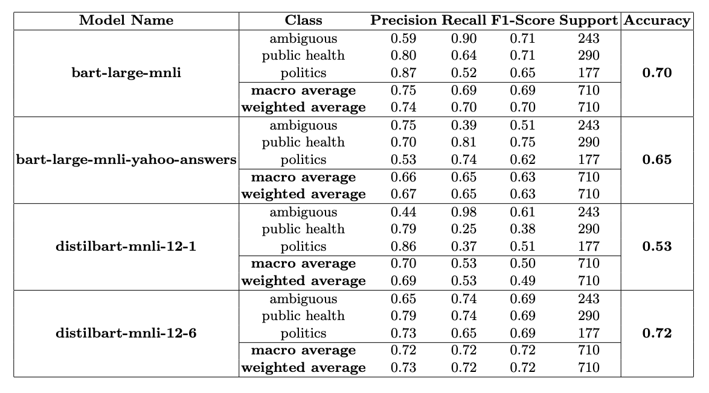

Our paper is driven by the hypothesis that conversations on social media usually have a political motive behind them. While this may be helpful for conversations about politics, sometimes it affects conversations in other topics, like public health for example. Due to the spread of Covid-19, many people were sharing their opinions online on how to stay safe against the virus and we wanted to verify if these opinions were actually politically motivated rather than being just good-natured advice.
We first extract data from Twitter and perform topic modelling to verify that politics and public health are indeed 2 major topics of conversation on social media. Then we compare the performance of some of the latest unsupervised classifiers for the task of detecting whether a tweet is medically relevant or politically motivated. To do this we manually annotate a subset of the data we extracted and check if the label predicted by the unsupervised classifier matches our annotations.
This is a recording of our presentation at the conference.
The final manuscript of our paper is available here.
Our paper won a best paper award at the conference.
All the code for our paper can be found in this zip file.
Please cite our paper if it is helpful to your work:
@InProceedings{10.1007/978-981-16-2543-5_56,
author="Mukherjee, Anjishnu
and Bhattacharyya, Souparno
and Ray, Kinjal
and Gupta, Balraj
and Das, Asit Kumar",
editor="Das, Asit Kumar
and Nayak, Janmenjoy
and Naik, Bighnaraj
and Dutta, Soumi
and Pelusi, Danilo",
title="A Study of Public Sentiment and Influence of Politics in COVID-19 Related Tweets",
booktitle="Computational Intelligence in Pattern Recognition ",
year="2022",
publisher="Springer Singapore",
address="Singapore",
pages="655--665",
abstract="Mukherjee, AnjishnuBhattacharyya, SouparnoRay, KinjalGupta, BalrajDas, Asit KumarAn increased usage of social media was observed as the Covid-19 pandemic progressed. We extract tweets relevant to the pandemic from publicly available Twitter data and analyse them to understand the change in public emotions over the year along with a detailed analysis of the topics of discussion. We find public health and politics to be the two most dominant topics. Hence, we perform a study where we compare the performance of existing unsupervised classification methods for the task of detecting whether a tweet is medically relevant or politically motivated.",
isbn="978-981-16-2543-5"
}
{kind=link}